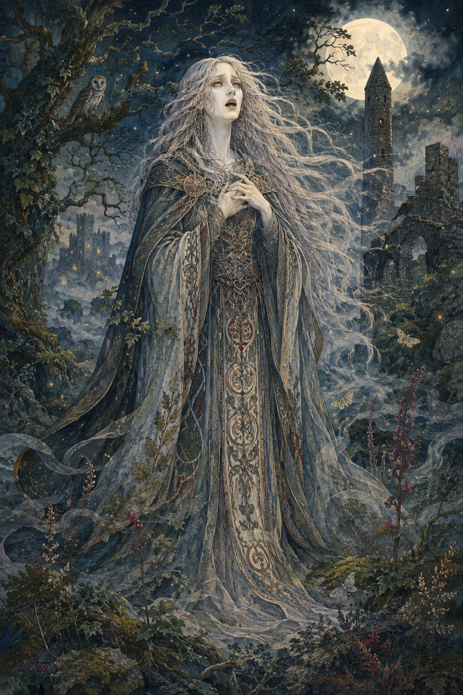
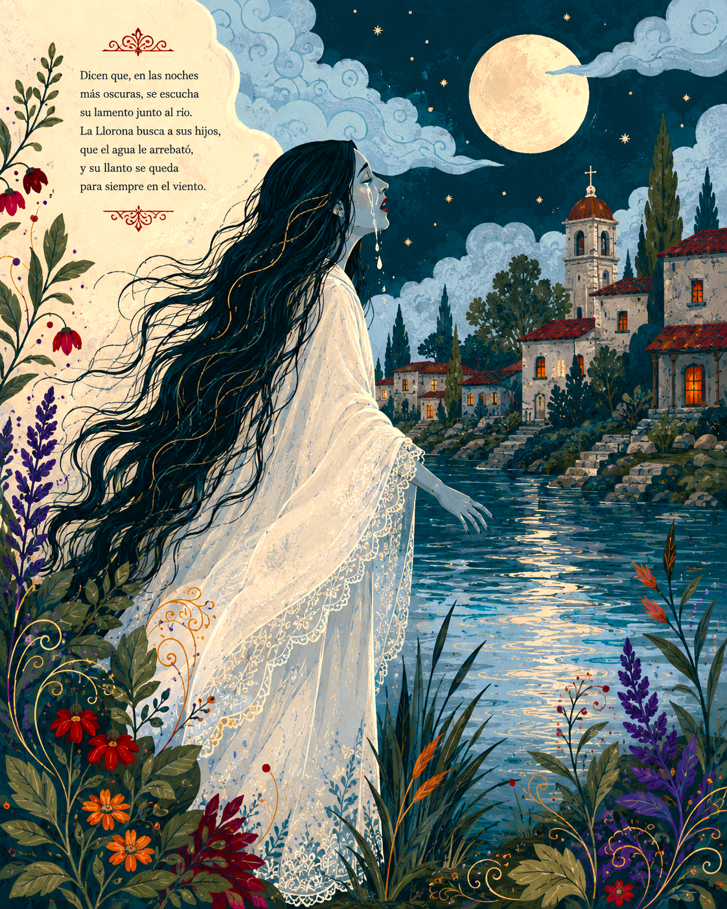
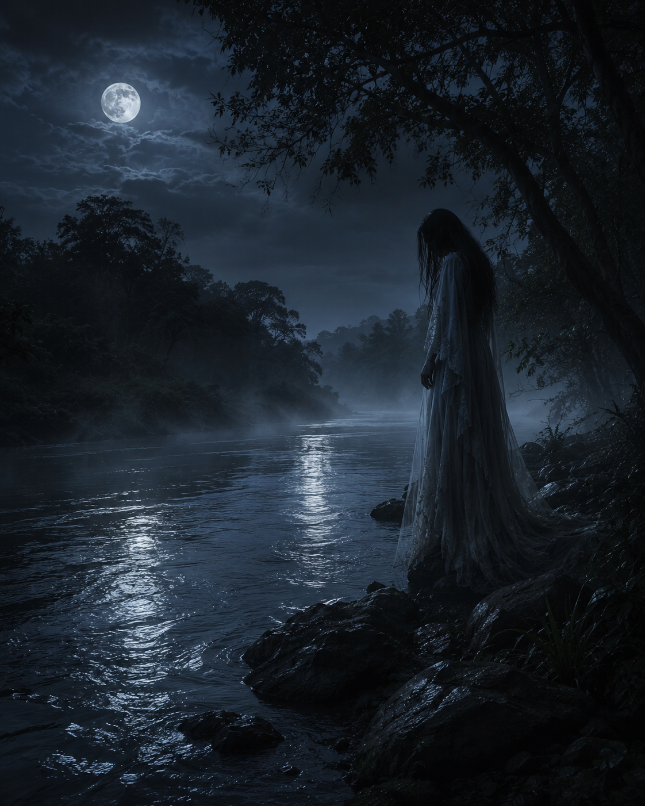
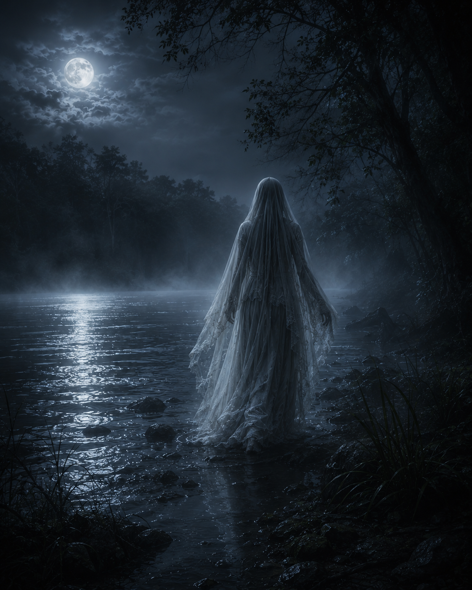
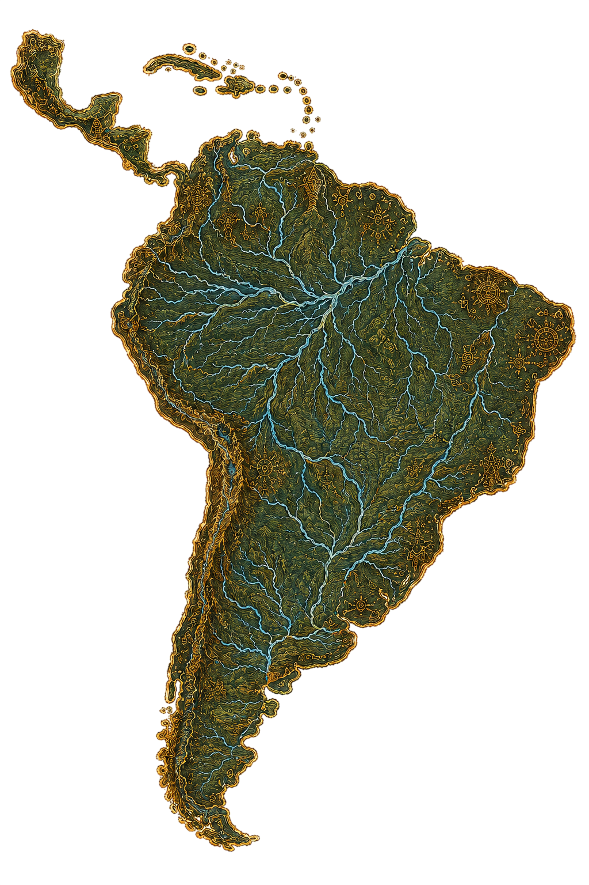
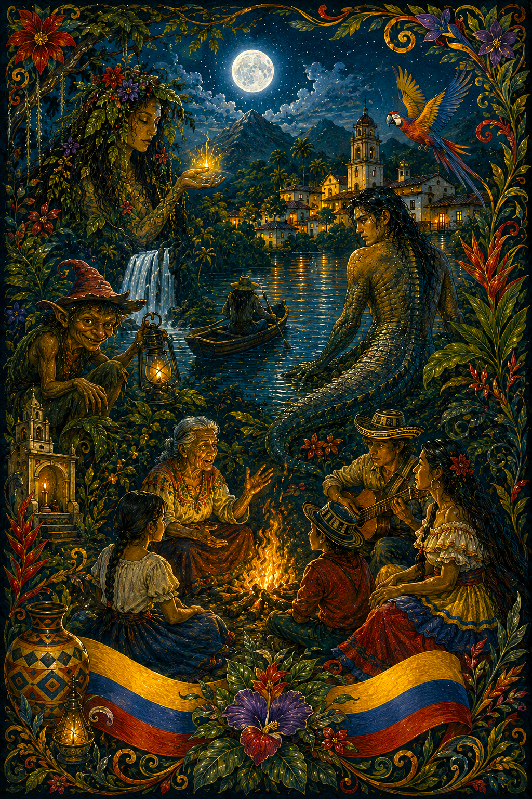
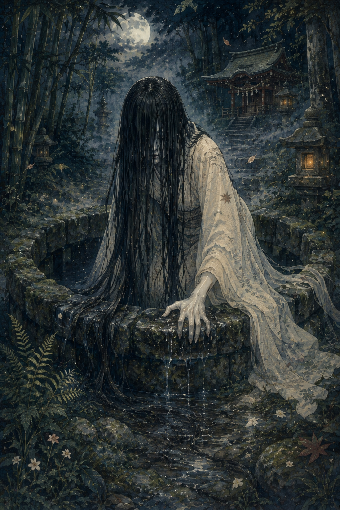

Banshee
Espíritu femenino del folclore irlandés que anuncia la muerte con su llanto.
La Llorona es una de las leyendas más extendidas en América Latina. Relata la historia de una mujer que, tras una gran tragedia familiar, vaga eternamente llorando por la pérdida de sus hijos.
Su lamento se escucha cerca de ríos, lagunas y caminos solitarios, especialmente durante la noche.

Según distintas versiones, La Llorona fue una mujer que perdió a sus hijos en un río o los abandonó, y luego fue condenada a buscarlos por toda la eternidad.
Su llanto se ha convertido en un símbolo de dolor y arrepentimiento dentro del folclore popular.


Se dice que La Llorona aparece vestida de blanco, con el rostro cubierto, caminando cerca del agua mientras emite su característico lamento.
Muchas personas afirman haber sentido su presencia sin llegar a verla completamente.
La leyenda ha sido utilizada tradicionalmente como advertencia para que los niños no salgan solos por la noche o se acerquen a ríos peligrosos.
Su historia mezcla el dolor humano con lo sobrenatural, convirtiéndola en una de las figuras más icónicas del folclore.

La leyenda de La Llorona tiene presencia en toda América Latina, incluyendo México, Colombia y países de Centroamérica.
En Colombia, se asocia principalmente a zonas rurales y riberas de ríos.


La Llorona simboliza el dolor, el arrepentimiento y las consecuencias de las decisiones humanas dentro del folclore popular.
También funciona como una narrativa moral que advierte sobre el peligro del descuido y la pérdida familiar.

Espíritu femenino del folclore irlandés que anuncia la muerte con su llanto.

Figura moderna del terror asociada a apariciones espectrales y lamentos.

Figuras similares en múltiples culturas asociadas al duelo y la pérdida.